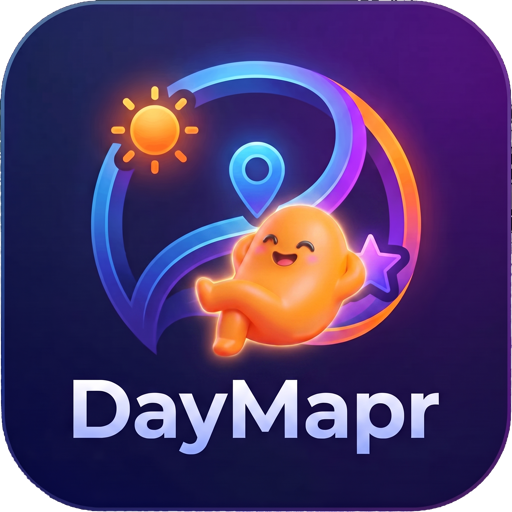
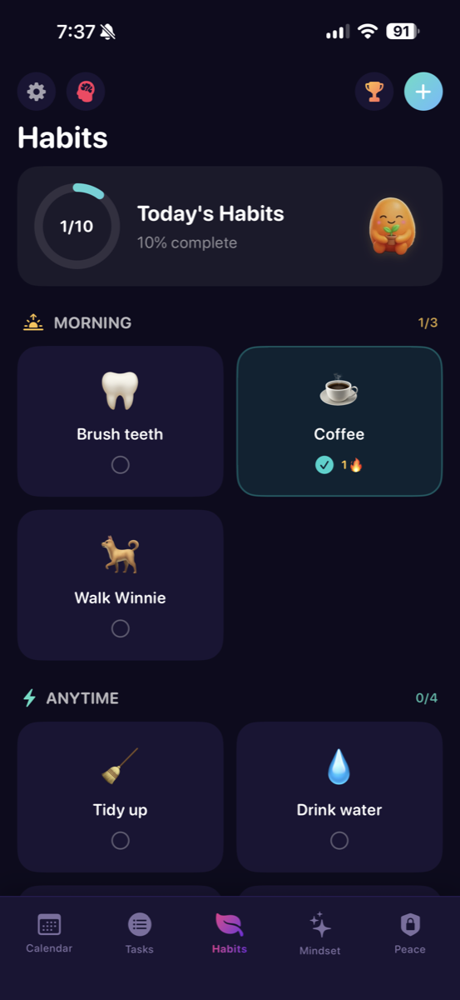
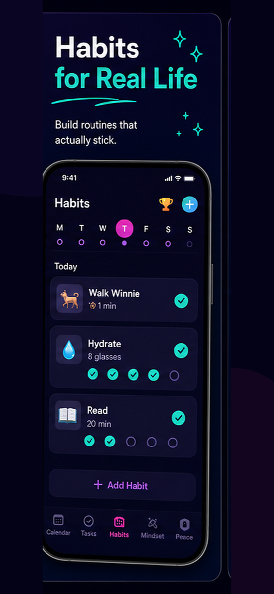
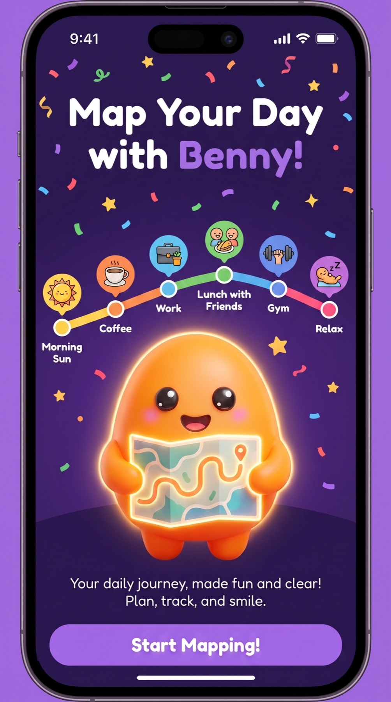

Keep habits visible
See today's habits, progress, and streaks without digging through menus.

DaymaprHabit tracker for ADHD
Daymapr keeps habits visible without turning routines into another overwhelming list. Track streaks, reset gently, and keep moving.

See today's habits, progress, and streaks without digging through menus.
Morning, anytime, and daily routines can live beside the rest of your day.
Progress, XP, and streaks make small wins easier to notice.

Routines that stick
Daymapr connects habits to the rest of the day, so brushing teeth, drinking water, walking, reading, and recurring routines can sit beside your tasks and calendar.

Daymapr
A habit tracker for ADHD brains, busy days, and imperfect momentum.